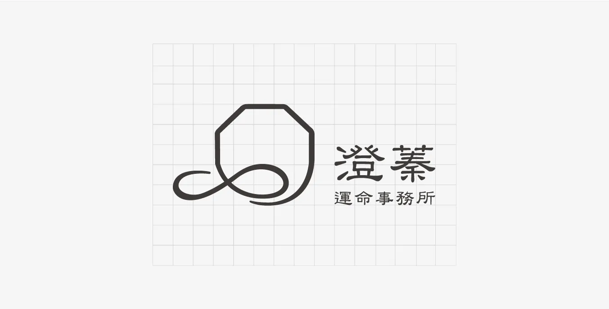
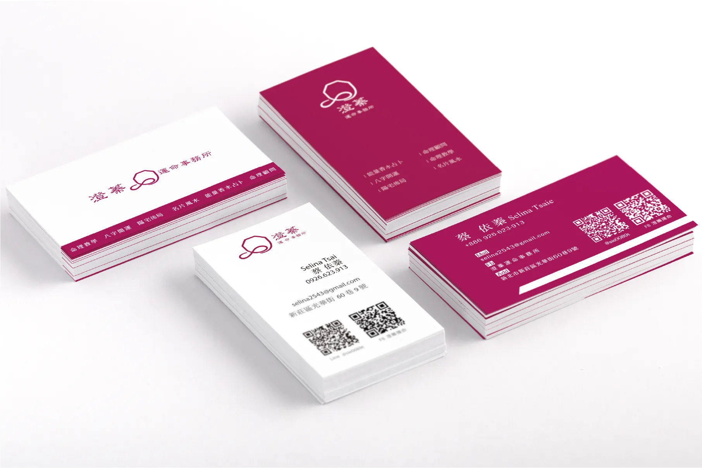

澄蓁運命事務所
設計理念
澄蓁運命事務所，主要服務內容與命理相關，設計發想是以八卦的延伸與漸漸解開的結其意象做結合， 傳達只要來到澄蓁運命事務所的人，都能把解不開的思緒解開，得到解惑；用色上選擇偏紅帶紫色系為主色調， 紫色有著智慧 敏銳及癒合的象徵，藉由古人流傳下來的運命方式加上專業的服務讓來問事的都可以得到心靈上的癒合； 紅色有代表著能量的特質，將這些正向能量傳達給周圍的人們。
PANTONE
221C
CMYK
9 100 26 38
RGB
145 0 72
HTML
#910048


返回